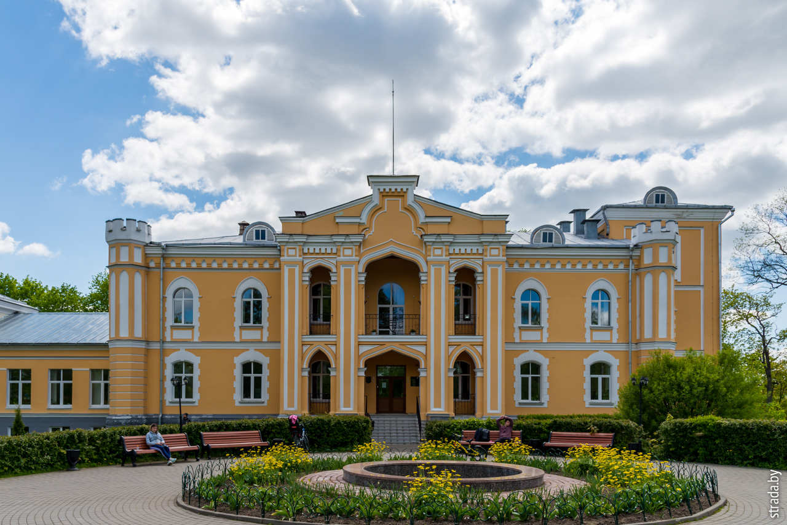

Дворец Чапских (бел. Палац Чапскіх) — усадьба XVII века, расположенная в Беларуси в деревне Прилуки Минского района.
В 1600-е годы Анна Огинская, младшая дочь троцкого подкомория Богдана Огинского, основала в Прилуках православный мужской монастырь. В 1735 году монастырь закрыли и на его месте стали жить Ивановские, родственники Анны Огинской. Потом имение передавалось в качестве приданого дочерям при замужестве. Так следующим владельцем усадьбы стал Леон Ошторп, минский губернский маршалок шляхты, а после его гибели перешло к его зятю агроному Антону Горватту[5]. Поэтому потом дворцом владели Ашторпы и Горваты[2].
В 1897 году хозяином дворца стал младший сын Эммерика Чапского Юрий, он проживал там с семьёй. Среди них писателями стали Юзеф Чапский и Мария Чапская. Во время владения усадьбой Юрий значительно улучшил её. К дворцу пристроили просторную столовую (в семье было 7 детей). Потолки были украшены позолоченной лепниной, на полу роскошный паркет. В залах было множество картин, они были обставлены мебелью в стиле Людовика XV. Гостями усадьбы во времена Юрия Чапского были композитор Станислав Монюшко, Наполеон Орда, Михаил Клеофас Огинский[5]. В апреле 1921 года в бывшем дворце Чапских открыли научную ферму Белорусского государственного университета, которую превратили в институт сельского хозяйства и позже перевели в Горки (Могилёвская область). Затем дворец стали использовать как национализированное имение, а позже как усадьбу колхоза. В 1938 году во дворце открыли дом отдыха НКВД, который стали посещать чиновники и писатели. В июне 1941 года с началом Второй мировой войны во дворце разместилась немецкая военная комендатура. Позже дворец стал местом отдыха генерального комиссара Беларуси Вильгельма Кубе. В июле 1944 года при отступлении немецкие военные подожгли дворец, чтобы уничтожить хранилище своих документов. В итоге пожар длился 3 дня. В 1957 году Совет Министров Белорусской ССР направил средства на восстановление дворца для исследований Минской научной лаборатории защиты картофеля от колорадского жука, которую возглавляла Циля Гандельман. В нём разместили станцию защиты от колорадского жука. 17 февраля 1971 года на основе станции и нескольких рабочих создали Белорусский научно-исследовательский институт защиты растений[7].
Во 2-й половине XVIII века при дворце заложили пейзажный парк из 2-х частей общей площадью 4,5 га. В парке стояли каменная часовня и амбар. Там же располагалось 2 Пруда, на одном из которых была водяная мельница. В течение 1-й половины XIX века 2-этажный дворец сделали каменным с низким цокольным этажом. Перед главным фасадом дворца возвели 3-ярусную восьмериковую башню с часами и высоким шатром со шпилем и Флюгером. Башня стояла на прямоугольном фундаменте с 4-мя башенками по углам. Средний ярус башни был окружен кантально-балочной галереей. Входы и окна были совсем небольшими. В 1851 году графе Ошторп[6] перестроил дворец в готическом стиле и заложил сад с оранжереей и башенными часами. В течение 1850—1870 годов дворец дополнили несколькими башнями. В 1871 году граф Эмерик Захарьяш Николай Северин фон Гуттен-Чапский (1828—1896 гг.) приобрел дворец в рамках скупки земель от Станьково до Минска, образовавших Станьковский ключ. В 1872 году Эммерик Чапский уменьшил число башен дворца до 4-х и достроил 4-кутную 3-этажную башню с винтовой лестницей. В 1886 году к Южному торцевому фасаду пристроили 1-этажный корпус со столовой и оранжереей, корпус позже стал двухэтажным и г-образным.
В 2016 году в Прилуках прошёл ураган, в результате которого существенно пострадал парк, Дворца стихия не коснулась